Bienvenue sur ma page dédiée à mes projets personnels et universitaires,
une vitrine de mes réalisations dans le monde passionnant de l'informatique et des jeux vidéo.
Vous trouverez ici une collection variée de projets que j'ai créés avec dévouement et passion,
alliant à la fois mes explorations académiques à l'IUT de Lannion et mes expériences personnelles.
Mes projets universitaires
Le Patio
Un projet de développement d'application pour une salle de spectacle appelée "Le Patio",
en Java et JavaFX destiné à la gestion de celle-ci. Le projet se concentre
sur trois fonctionnalités clés : la création de clients ou abonnés, l'affichage d'une liste
triée des clients avec toutes leurs informations, et la saisie des réservations, incluant
la création automatique de clients si nécessaire.
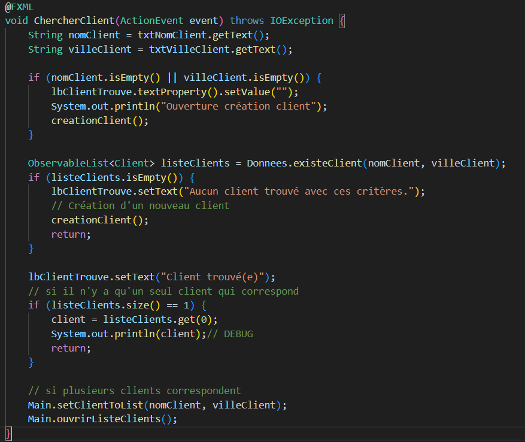
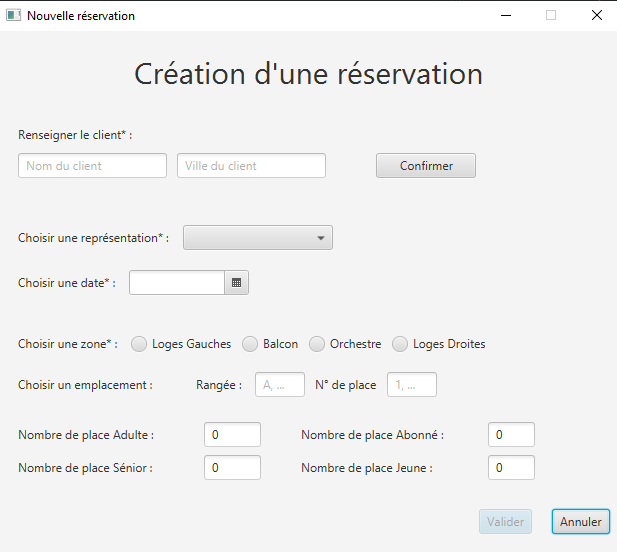
Extrait du JavaFX ainsi que l'aperçu de la fenêtreL'application
Gestion de projet
Un projet de gestion complet pour "Le Patio", une application
de gestion de salle de spectacle. Ce projet a inclus la création de documents
clés tels que la note de cadrage et la rédaction de la Spécification des Exigences
Logiciels (SEL). Nous avons également élaboré un diagramme des objectifs et tâches (OT),
une matrice RACI pour définir les responsabilités, des estimations des charges de
travail, ainsi qu'un diagramme de Gantt prévisionnel et réel pour le suivi du projet.
Un événement de team building pour une entreprise, en sélectionnant un
thème attrayant et des activités engageantes. Le projet a inclus la création d'un flyer
pour promouvoir l'événement et la réalisation d'un film promotionnel pour en assurer une
meilleure visibilité.
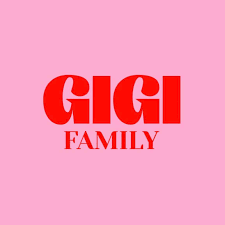
Logo de l'entreprise choisi : "Gigi Family"Flyer
Exploitation d'une base de donnée
Un projet d'analyse de données éducatives en France. Nous avons implémenté, peuplé et
exploité une base de données contenant des informations sur les effectifs, les taux de
réussite, les indices de position sociale et la valeur ajoutée des établissements de
l'enseignement primaire et secondaire sur plusieurs années. L'exploitation de cette base
de données a été réalisée à l'aide d'un programme Python, permettant de générer des
statistiques détaillées sur diverses données.
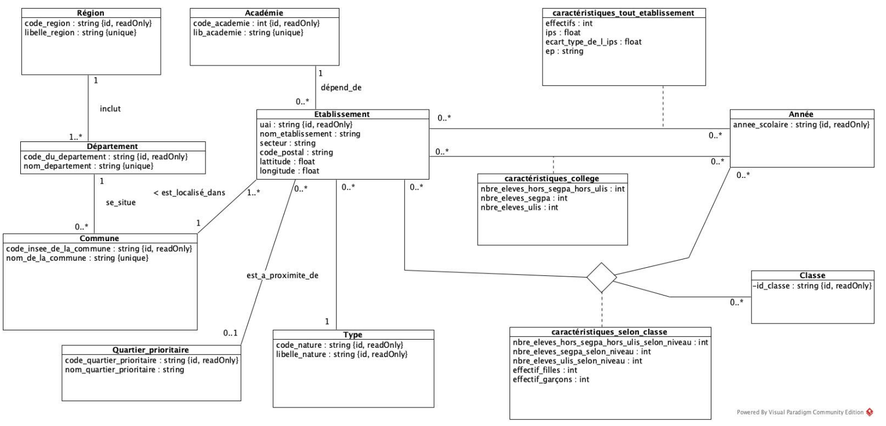
Diagramme de classe
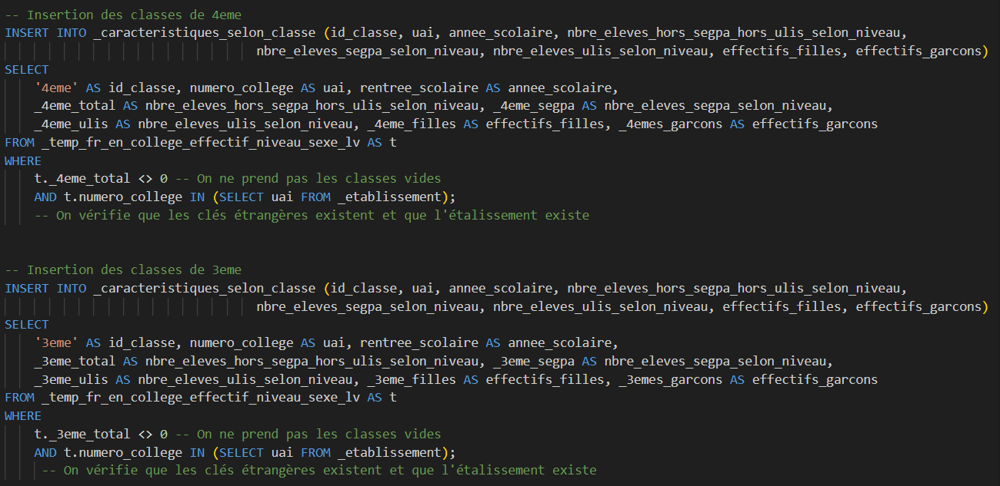
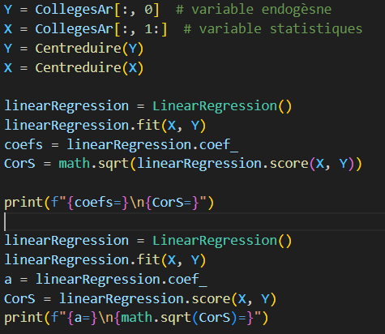
Extrait des différents programme de la base de donnéeLa base de donnée
Installation d'un serveur Apache
Ce projet visait à créer un environnement serveur robuste et sécurisé pour héberger
des applications web. Nous avons installé et configuré un serveur Apache sécurisé
ainsi qu'une base de données MySQL sur une machine virtuelle Debian 11.
En mettant en place un serveur Apache sécurisé, nous avons assuré la protection
des données et la confidentialité des communications. De plus, l'intégration de MySQL
permet une gestion efficace et fiable des données.
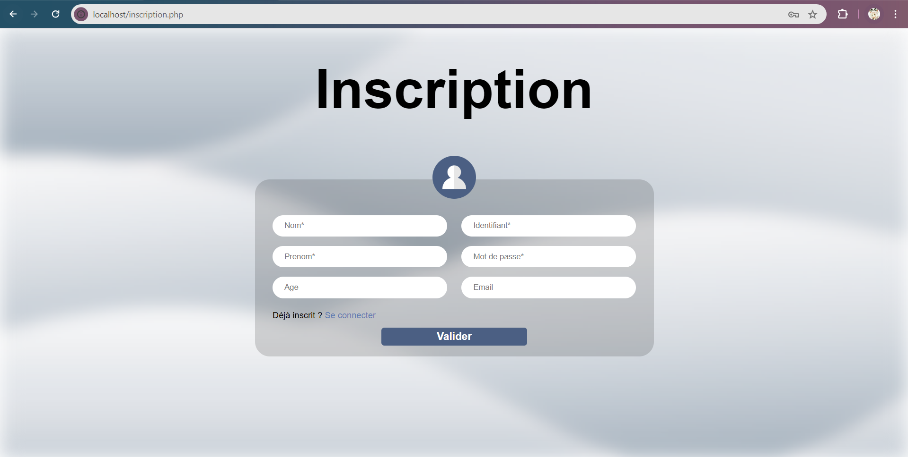
Page web d'inscription au réseau
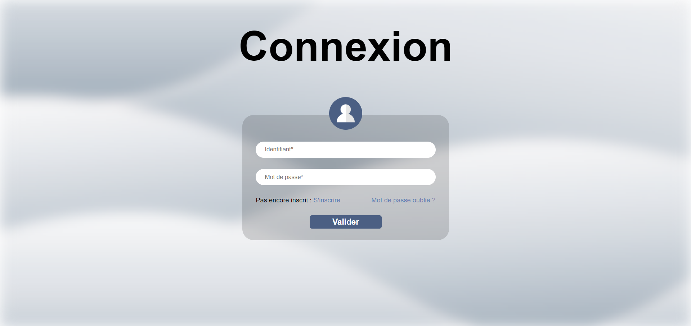
Page web de connexion au réseauRapport du projet
Problème des huit reines
Un programme Python résout le problème des huit dames en utilisant une recherche en
largeur(BFS). Il faut tout d'abord lui indiquer la colonne où il faut commencer.
Puis il explore systématiquement toutes les configurations possibles
des huit dames sur un échiquier sans qu'aucune dame ne puisse menacer une autre dame en
une seule étape. Une fois une solution trouvée, le programme renvoie la disposition des
dames sur l'échiquier, assurant qu'aucune d'entre elles ne se menace mutuellement.
Pour ce projet, notre groupe avons créé un générateur de documentation en utilisant PHP
pour convertir des fichiers Markdown en HTML, couvrant à la fois le document
utilisateur et le document technique. Ensuite, un script bash et une machine virtuelle
transforment ces fichiers HTML en PDF. Dans le document utilisateur, le code source
en C, comportant des commentaires, sert de base pour générer la documentation.
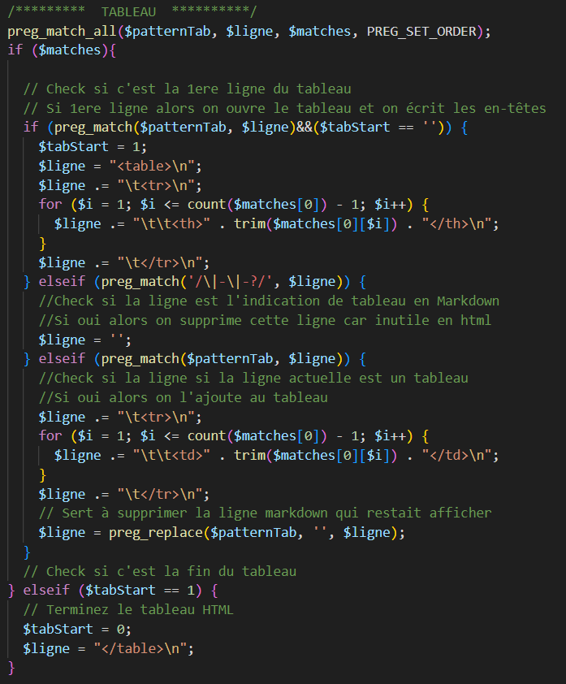
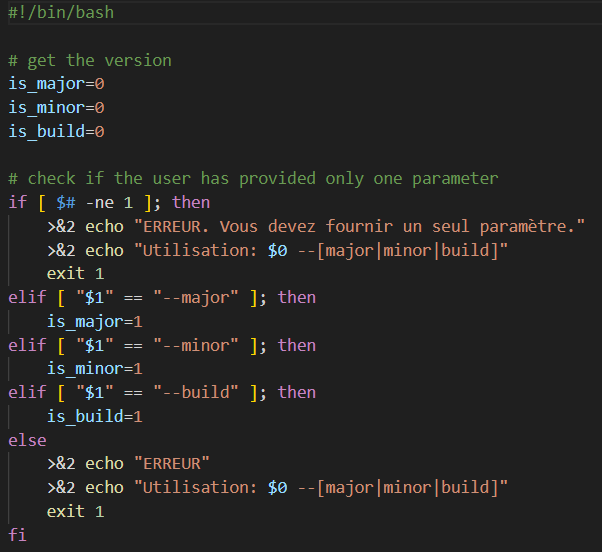
Extraits du programme php et du script bashLe programme
Création d'une base de donnée
Un site de streaming en HTML/CSS/Javascript. L'objectif était d'analyser
et d'identifier les besoins d'un client pour ensuite faire une maquette du
site sur Figma puis le développer.
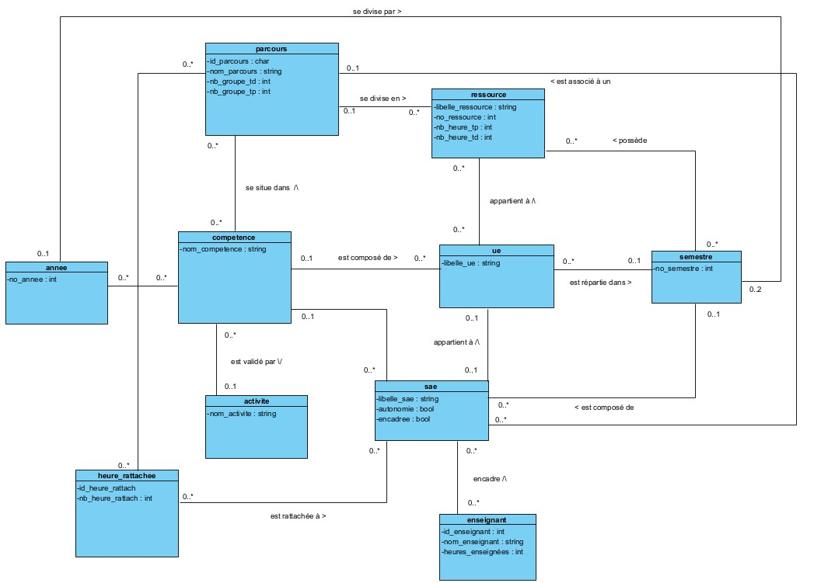
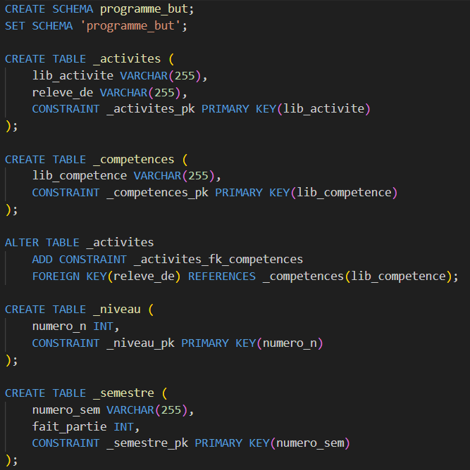
Diagramme de classe de la base de données et un extrait du SQLLa base de donnée
Site de streaming
Un site de streaming en HTML/CSS/Javascript. L'objectif était d'analyser
et d'identifier les besoins d'un client pour ensuite faire une maquette du
site sur Figma puis le développer.
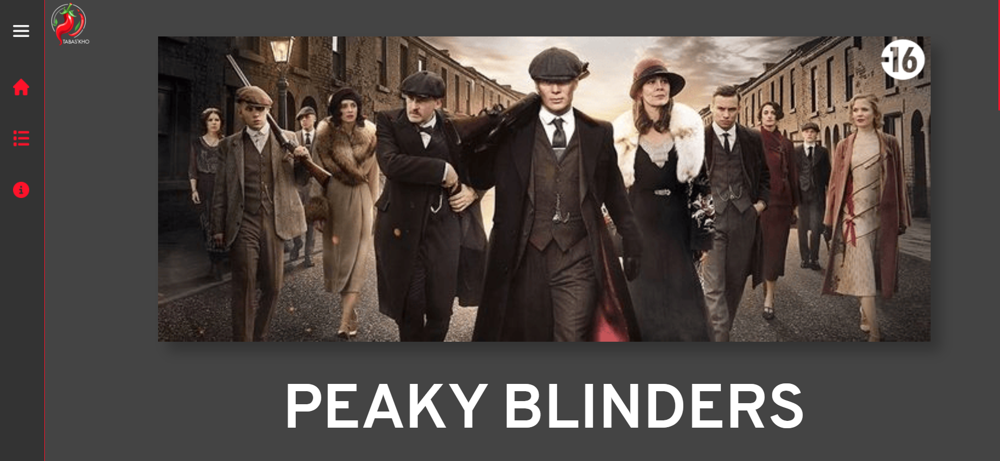
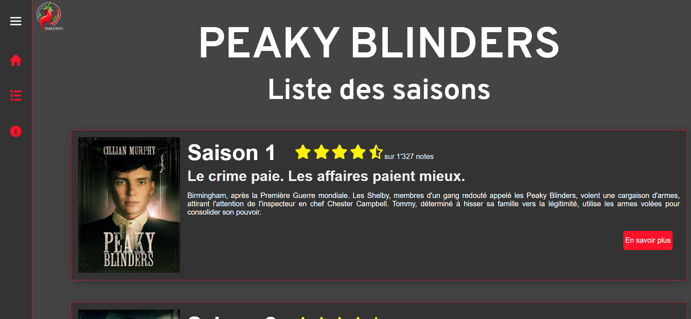
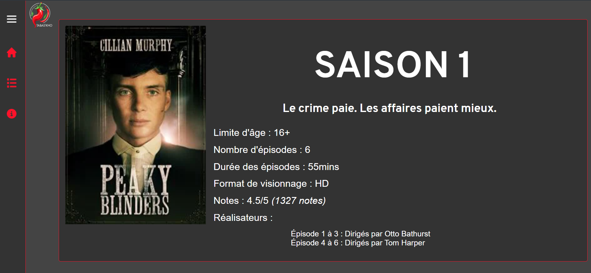
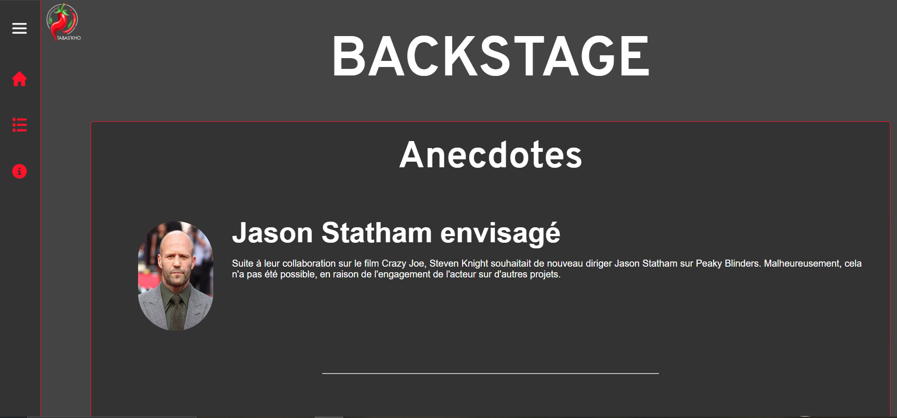
Extraits des différentes pages du siteLe site
Solveur du sudoku
Un solveur de sudoku par backtracking explore toutes les possibilités pour remplir la grille.
Il place un chiffre dans une case vide et vérifie sa validité selon les règles du sudoku
(chaque chiffre de 1 à 9 doit apparaître une fois par ligne, colonne et sous-grille de 3x3).
Si valide, il passe à la case suivante; sinon, il revient à la case précédente et essaie un
autre chiffre. Ce processus de tentative et de retour en arrière continue jusqu'à ce que la
grille soit complètement remplie ou que toutes les options soient épuisées, prouvant que le
puzzle est insolvable ou non.
Ce programme en C permet de résoudre un sudoku en permettant à l'utilisateur de remplir
une grille case par case. Il charge la grille depuis un fichier, vérifie les règles du jeu
(l'unicité des valeurs par ligne, colonne et bloc 3x3), et permet à l'utilisateur de saisir
des valeurs tout en assurant leur validité. Une fois la grille remplie correctement, le programme
signale la fin de la partie.
Avec les membres de notre équipe, nous avons choisi une organisation (à but lucratif,
à but non lucratif ou administration publique) pour laquelle nous avons fait des recherches.
Nous l'avons ensuite présenté sous sa dimension économique (grille des caractéristiques
de l'organisation et diagnostic externe) et dans le cadre de la RSE, avec un accent particulier
sur les moyens qu'elle met en oeuvre pour réduire son empreinte écologique du numérique.
Le jeu est un parcours de rêve basé sur les idées préconçues de vos amis sur Donald Trump.
Le joueur explorent des environnements extravagants, réalisant des acrobaties et surmontant
des défis dans un paysage surréaliste.
C'est un jeu qui a été développé sur Unreal Engine 4 en Blueprint.
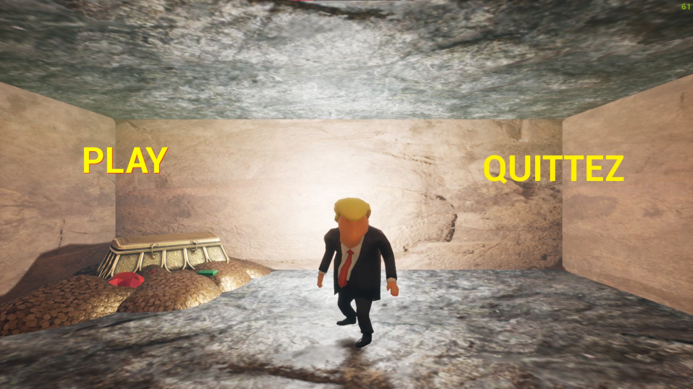
Menu au lancement du jeu
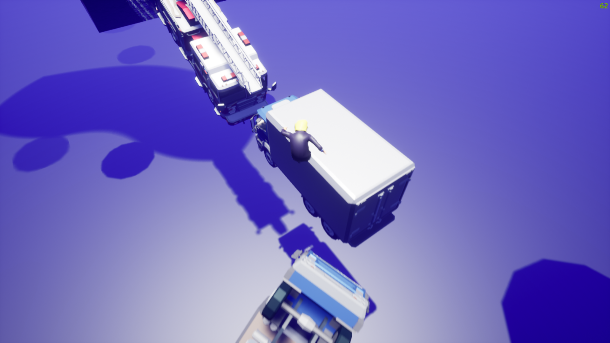
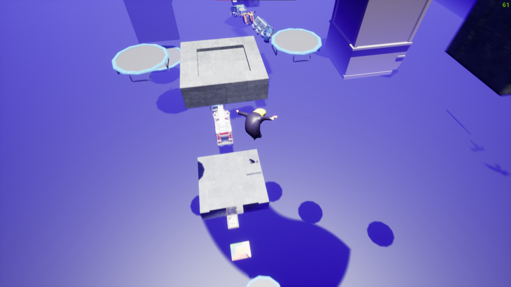
Extraits du jeuTélécharger
Dragon Adventure
C'est le jeu final de mon stage à Isart Digital à Paris. C'est un Run and Gun avec 3 niveaux dont un boss final
C'est un jeu qui a été développé sur Unity en Visual Scripting.
Menu au lancement du jeuExtraits du jeuTélécharger
RageGame
C'est mon tout premier jeu où le but est de finir le niveau sans faire : alt + F4
C'est un jeu qui a été développé sur Unreal Engine 4 en Blueprint.
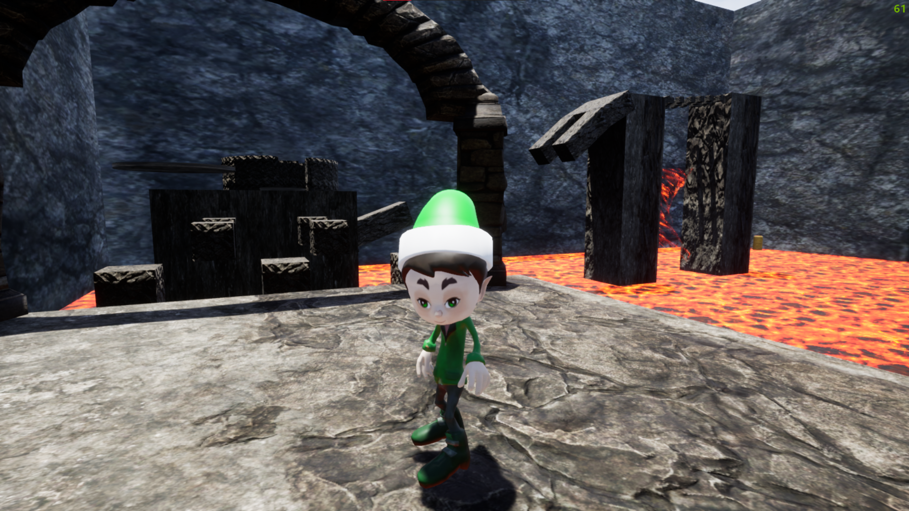
Menu au lancement du jeu
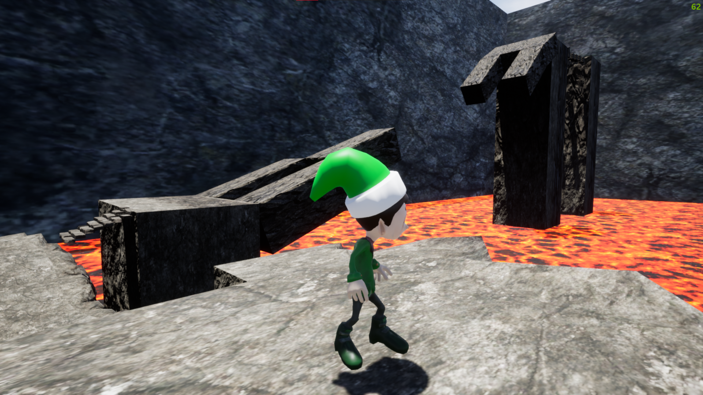
Extraits du jeuTélécharger